El baile cósmico: interacciones y mergers
Las galaxias no viven aisladas: se acercan, se orbitan, se deforman y a veces se fusionan. Esa coreografía gravitacional —a lo largo de miles de millones de años— es uno de los motores principales de la evolución galáctica. Esculpe formas raras, gatilla (o apaga) la formación estelar, enciende núcleos activos y nos prepara para nuestra propia fusión con Andrómeda.
Las dos clases anteriores describieron qué es una galaxia y cómo las contamos. Esta clase responde a una pregunta dinámica: ¿qué pasa cuando dos galaxias se encuentran? La profesora lo plantea como un "baile cósmico": las galaxias se forman en el universo temprano y, a lo largo del tiempo cósmico, interactúan gravitacionalmente cambiando sus propiedades hasta dar el universo que vemos hoy. Para alguien de informática conviene pensarlo como un sistema de N cuerpos con disipación: el resultado de cada encuentro depende de condiciones iniciales (masas, ángulos, contenido de gas) y es, en gran medida, no determinista a simple vista — por eso aparecen tantas morfologías "raras" que no son ni espirales ni elípticas.
El baile cósmico: por qué importan las interacciones
Las galaxias se moldean unas a otras a lo largo del tiempo cósmico.
La idea central de la clase: las galaxias no son objetos estáticos ni aislados. Se forman temprano y, a medida que el universo evoluciona, se encuentran lo suficientemente cerca como para empezar a orbitarse mutuamente. Dependiendo de las condiciones del medio, de las propiedades de cada galaxia y de su masa, ese encuentro puede terminar en muchas cosas distintas: desde una simple deformación pasajera hasta una fusión (merger) que produce una galaxia completamente nueva, con propiedades distintas a las originales.
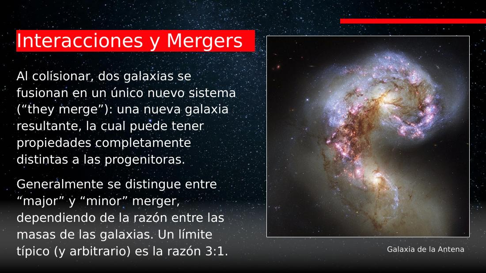
Piensa en un simulador de N cuerpos con colisiones inelásticas. La gravedad fija las reglas, pero el estado final depende fuertemente de las condiciones iniciales y de la disipación (el gas pierde energía por choques). Como solo observamos un fotograma (una imagen fija), reconstruir "qué pasó" es un problema inverso: hay que inferir la trayectoria a partir de una sola muestra. Por eso los astrónomos trabajan con simulaciones que sí permiten correr el tiempo hacia adelante y atrás.
La clase fue dictada por una investigadora de galaxias del universo lejano (no por Valentino González, titular del curso): "por hoy soy Valentino González". Los mergers son un tema cercano a su trabajo. Anécdota: un paper reciente sobre fusiones se titula "One Merge to Rule Them All", en guiño a El Señor de los Anillos.
Major vs. minor merger: la razón de masas
La clasificación más básica de un merger es por el cociente entre las masas.
Los mergers se clasifican según la razón de masas de las galaxias que participan:
- Major merger (fusión mayor): las dos galaxias tienen masas comparables. El umbral típico es una razón de 3:1 o 4:1 (la galaxia grande tiene 3–4 veces la masa de la chica). Aquí ambas se transforman radicalmente.
- Minor merger (fusión menor): una galaxia es mucho más masiva que la otra. La grande casi no se perturba; la chica se destruye. Ejemplo: la Vía Láctea y las Nubes de Magallanes.
La docente subraya que ese límite 3:1 (o 4:1) es arbitrario: en buena parte está fijado por nuestras limitaciones observacionales —qué tipo de merger alcanzamos a distinguir a cierta distancia—, no por un cambio físico abrupto.
Es un umbral (threshold) sobre una variable continua: clasificar "major/minor" a partir de es como binarizar un score continuo. El corte en 3:1 o 4:1 es un hiperparámetro elegido por conveniencia y limitado por la sensibilidad del detector (a más distancia, peor resolución y completitud), no una propiedad intrínseca del fenómeno.
Un zoológico de interacciones
Renacuajo, ratones y anillo: tres encuentros, tres resultados distintos.
El diagrama de Hubble (elípticas y espirales "bonitas") no alcanza para describir el universo real: existen formas irregulares que no son ni lo uno ni lo otro. Casi siempre, esas rarezas son la firma de una interacción. La clase recorre tres ejemplos emblemáticos.
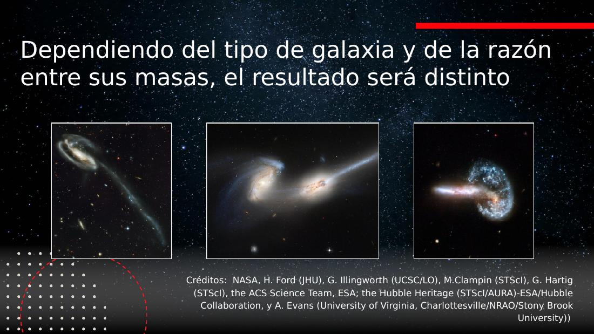
El Renacuajo: una galaxia destrozada
Una galaxia menor, rica en gas, interactuó con una galaxia mayor y quedó completamente destruida. La "colita" larga y brillante es esa galaxia chica estirada por las fuerzas de marea. Su gas, polvo y estrellas quedaron dispersos; pero al comprimirse el gas, se gatilla formación de nuevas estrellas a lo largo de la cola. Las estrellas de la galaxia original quedan, además, errantes (probablemente orbitando de forma desordenada).
Los Ratones: dos espirales fusionándose
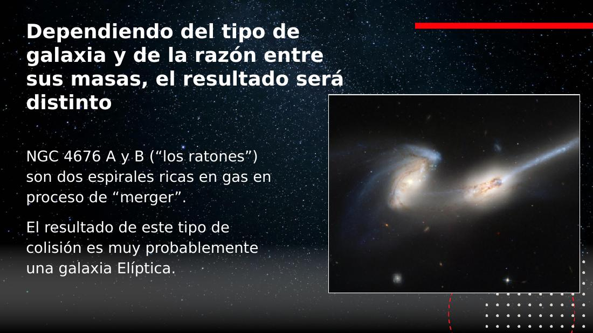
En estas imágenes de divulgación, el color suele codificar temperatura: azul = más caliente (estrellas jóvenes y masivas), rojo = más frío. Por eso una cola azulada delata formación estelar reciente. (Ojo: no es una regla universal; depende del instrumento y del mapeo de filtros a colores.)
El anillo: un "tiro al blanco" cósmico
El tercer caso es una galaxia anillo: una espiral fue atravesada casi de frente por otra galaxia, como un tiro al blanco. El impacto en la zona central generó una onda de presión que se propagó hacia afuera (como una piedra en el agua), comprimiendo el gas y disparando formación estelar en un anillo alrededor del núcleo. Cada colisión es distinta: el resultado depende del ángulo, del tipo de galaxias y de cuánto gas tienen.
A los astrónomos les gusta poner nombres pintorescos: "Renacuajo", "Ratones", "Antena", "Medusa". Es folclore útil: un apodo memorable ayuda a comunicar la morfología de un objeto mucho mejor que un número de catálogo.
Fuerzas de marea y starbursts
Comprimir gas dispara estrellas; las más masivas mueren rápido y devuelven energía.
El mecanismo común a todos estos casos: cuando dos galaxias interactúan, el gas se comprime (por ondas de choque y fuerzas de marea) y eso dispara formación estelar intensa. A una galaxia en ese estado se le llama starburst ("estallido de formación estelar"). Por un momento cósmico breve, brilla muy fuertemente porque está produciendo muchísimas estrellas.
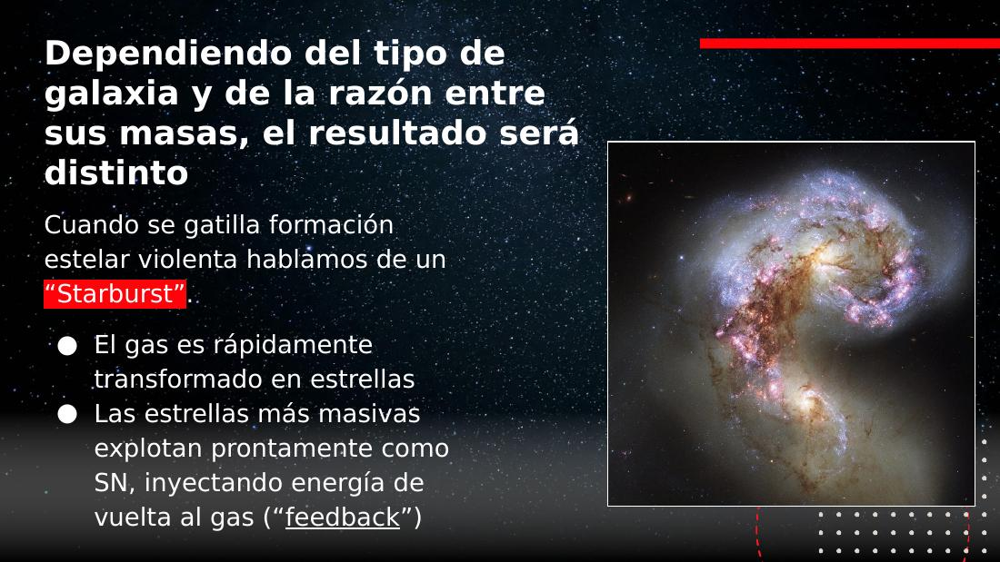
El tiempo de vida de una estrella lo determina casi únicamente su masa. Las más masivas son las "rockstars": viven rápido y mueren jóvenes (en millones de años, no miles de millones). Por eso un starburst es intrínsecamente transitorio: las estrellas grandes que lo hacen brillar se apagan pronto.
Una marea es un gradiente de un campo: la fuerza gravitacional no es uniforme a lo ancho de la galaxia, así que el lado cercano es tirado más fuerte que el lejano. Ese diferencial (la derivada de la fuerza respecto a la posición) es lo que estira la galaxia en una "cola". Es el mismo principio que produce las mareas oceánicas de la Luna, escalado a kiloparsecs.
¿Encender o apagar la formación estelar?
Un merger puede dar vida… o matarla. Y a veces, revivir una galaxia muerta.
Aquí está el matiz más importante de la clase: un merger no siempre gatilla formación estelar. Según las condiciones, puede pasar lo contrario.
- Favorece: si hay mucho gas y se comprime, nacen estrellas (starburst).
- Apaga (quenching): si la interacción remueve el gas o lo calienta tanto que ya no puede colapsar, la galaxia se queda sin combustible. Sus estrellas envejecen, se enrojecen y la galaxia "muere" (deja de formar estrellas): es lo que ocurre con las elípticas.
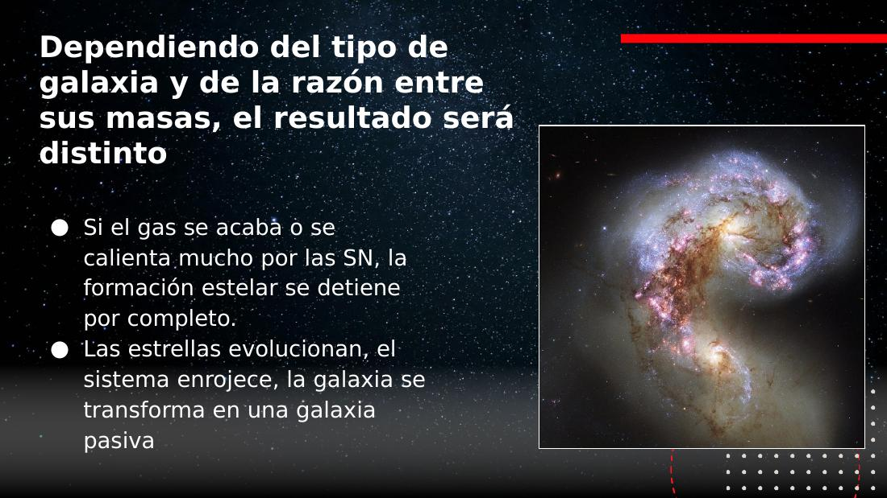
Es ciencia muy reciente (últimos ~5 años, con el telescopio espacial James Webb). El consenso provisional: si promedias todos los mergers del universo, parecen gatillar formación estelar algo más que apagarla — pero la evidencia es leve. No hay una única respuesta: depende de cada encuentro.
"Muerta" no siempre es para siempre. Una galaxia sin gas puede revivir si un nuevo merger le entrega gas fresco y vuelve a formar estrellas. El universo es un lugar dinámico.
AGN: cuando el merger alimenta el agujero negro
Casi toda galaxia tiene un agujero negro central; un merger puede "encenderlo".
La mayoría de las galaxias —incluida la Vía Láctea— tiene un agujero negro supermasivo en su centro. El agujero negro en sí no emite luz. Pero si le cae material, este forma un disco de acreción: por conservación del momento angular, el gas gira cada vez más rápido al acercarse, se calienta enormemente y emite muchísima luz. A ese estado "encendido" se le llama AGN (Active Galactic Nucleus, núcleo galáctico activo).
La palabra clave es activo: no es un tipo distinto de objeto, sino un estado que se prende y apaga según haya o no material cayendo. El de la Vía Láctea está tranquilo (inactivo). Un merger puede encenderlo, porque puede dirigir gas hacia el centro y darle "combustible".
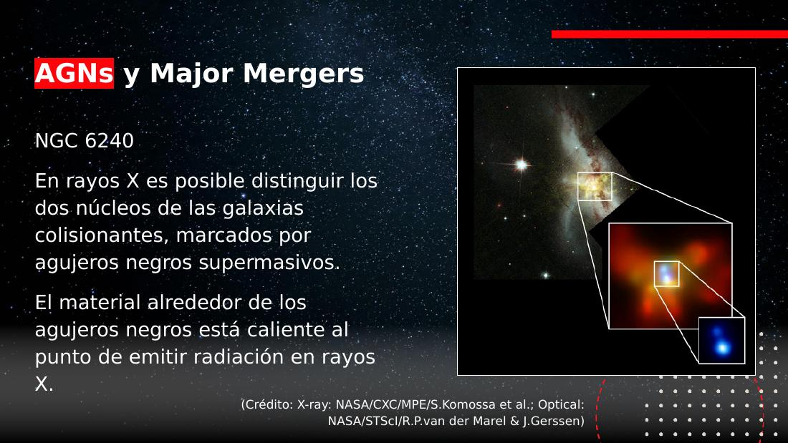
No vemos el agujero negro, sino el material a su alrededor. En la película Interestelar (con el físico Kip Thorne, Nobel, asesorando) el disco de acreción se ve curvado por encima y por debajo del agujero: su enorme masa dobla el espacio-tiempo y la luz, mostrando partes del disco que normalmente quedarían ocultas. Cuando observamos uno real por primera vez, se veía justo así. Distintas longitudes de onda revelan distintos procesos: el disco emite con fuerza en rayos X.
Cuando dos agujeros negros supermasivos finalmente colisionan, generan ondas en el espacio-tiempo ("como tirar una piedra al agua"). Detectores como LIGO captan ese tipo de señales. (La transcripción dice "li fue el detector"; se corrige a LIGO. LIGO detecta fusiones de agujeros negros de masa estelar; las fusiones supermasivas corresponden a otros experimentos —p. ej. pulsar timing arrays / LISA—; este matiz se infiere, no se afirmó explícitamente en clase.)
Andrómeda y la Vía Láctea: nuestro futuro merger
El ejemplo más cercano (y personal) de major merger.
La Vía Láctea y Andrómeda son las dos galaxias más masivas del Grupo Local, y vamos directo a una colisión. En unos 4.000 millones de años empezaremos a fusionarnos, formando eventualmente una galaxia elíptica masiva (apodada en broma "Milkdromeda"), con los dos agujeros negros centrales juntos.
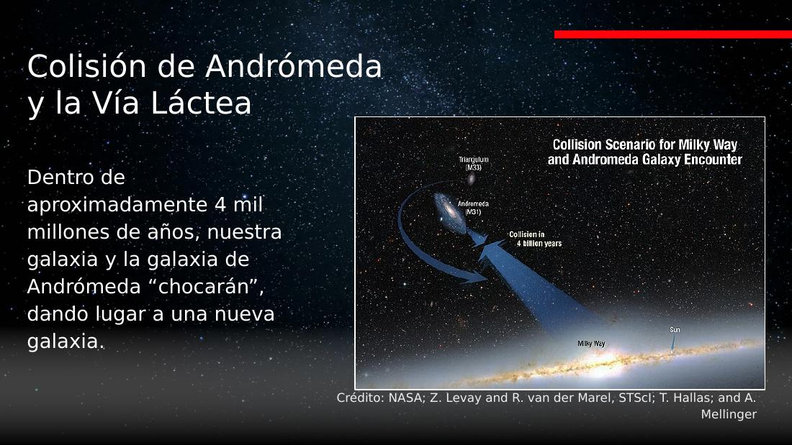
El audio confunde "millones" y "miles de millones". Los valores correctos (de la diapositiva y la astronomía estándar): la colisión con Andrómeda es en ≈ 4.000 millones de años (4 Gyr); al Sol le quedan ≈ 5.000 millones de años (5 Gyr) antes de convertirse en gigante roja; y la última major merger de la Vía Láctea fue hace ≈ 8–10 mil millones de años. Ante dudas, primar los valores de la diapositiva.
Colisión de galaxias ≠ colisión de estrellas
Aunque suene violento, cuando dos galaxias colisionan las estrellas casi nunca chocan entre sí: hay demasiado espacio vacío. Para dimensionarlo: la estrella más cercana al Sol, Próxima Centauri, está a 4,2 años luz. A esas separaciones típicas, las estrellas simplemente se reorganizan en sus órbitas; el proceso violento ocurre en el gas, no en las estrellas.
Es un problema de densidad de empaquetamiento. Si modelas las estrellas como puntos en un volumen enorme, la probabilidad de colisión directa es despreciable —como dos enjambres de partículas que se atraviesan sin que casi ninguna se toque. Lo que sí interactúa es el campo gravitacional colectivo (y el gas, que es un medio continuo y disipativo).
Canibalismo y streams estelares
Cuando la víctima es mucho más chica, deja "huellas del crimen" en el halo.
Cuando una galaxia mucho más masiva consume a una pequeña, hablamos de canibalismo galáctico. La grande casi no se altera; la chica queda destrozada y dispersa. Andrómeda, por ejemplo, terminará comiéndose a sus satélites brillantes M32 y M110.
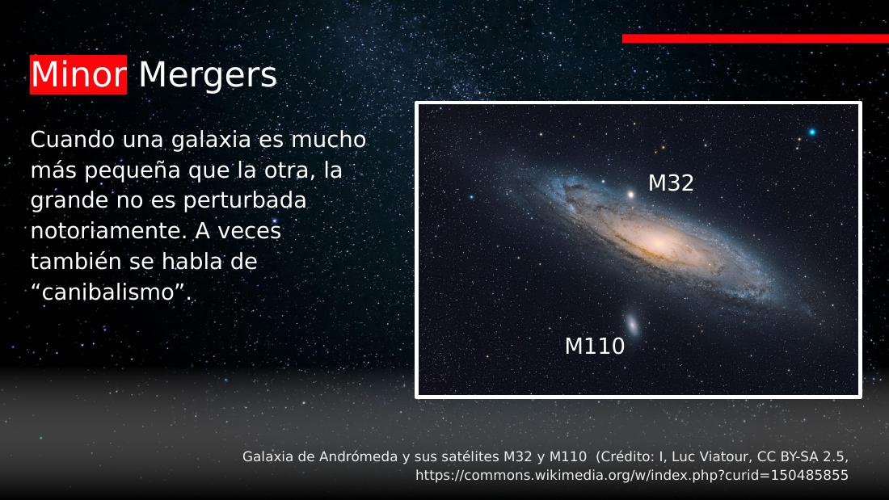
El resto del gas neutro de las interacciones se detecta especialmente en radio: el hidrógeno neutro emite en la línea de 21 cm (una transición por cambio de espín). En óptico dos galaxias pueden verse separadas y "tranquilas", pero en radio se ve todo el gas estirado y conectándolas: el polvo y el gas llegan mucho más lejos que la luz estelar.
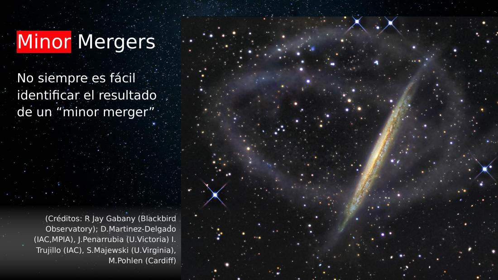
Streams estelares: la evidencia del crimen
En nuestra propia galaxia, las galaxias enanas capturadas se estiran en streams (corrientes) estelares que orbitan el halo. Hay entre 20 y 30 identificados (corriente de Sagitario, corriente Magallánica, etc.). El más famoso es la "Gaia Sausage" (formalmente Gaia-Enceladus), nombrada por V. Belokurov en honor a su hija; el satélite Gaia midió posiciones precisas de millones de estrellas.
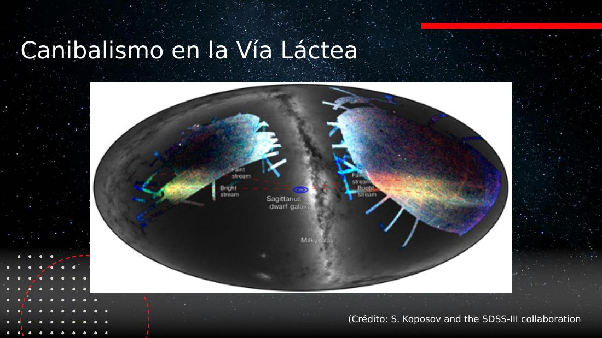
Los ≈ 150 cúmulos globulares del halo de la Vía Láctea NO son lo mismo que estos streams. Son enjambres casi esféricos de estrellas muy viejas, de los objetos más antiguos del universo, formados en condiciones primordiales. A diferencia de las galaxias (que sí tienen materia oscura, evidente en sus curvas de rotación), los cúmulos globulares no muestran materia oscura. Se cree que fueron capturados, no formados, por nuestra galaxia.
El vecindario: grupos, cúmulos y la gran escala
El "ambiente" de una galaxia determina cuántas interacciones tendrá.
Si los mergers son tan importantes, entonces el entorno importa: cuántas galaxias hay cerca define la frecuencia de las interacciones. Las galaxias no se reparten de forma homogénea — a grandes escalas el universo sí es homogéneo, pero en escalas pequeñas hay sobredensidades (cúmulos) y vacíos.
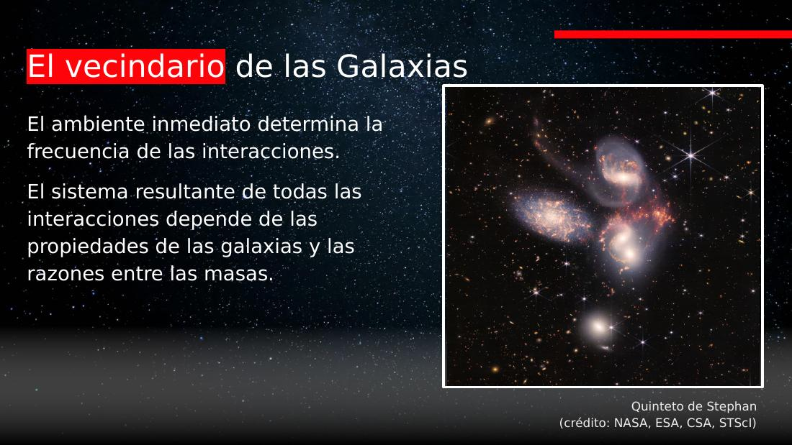
¿Cómo distinguir la impostora? Por dos pistas: (1) tiene un redshift distinto (está a otra distancia), y (2) está tan cerca que se resuelven sus estrellas individuales, mientras que las galaxias del grupo, más lejanas, se ven "granulosas" pero sin puntos resueltos. La cercanía es, literalmente, resolución.
Escalas del vecindario, de menor a mayor:
- Grupo Local: nuestra "cuadra". Vía Láctea, Andrómeda y decenas de galaxias menores, ligadas gravitacionalmente. La expansión del universo no las separa; eventualmente se fusionarán en una sola gran elíptica.
- Supercúmulo Laniakea: nuestro "barrio". Contiene la Vía Láctea y ≈ 100.000 galaxias. Pero, a diferencia del Grupo Local, no está todo ligado: no se fusionará entero.
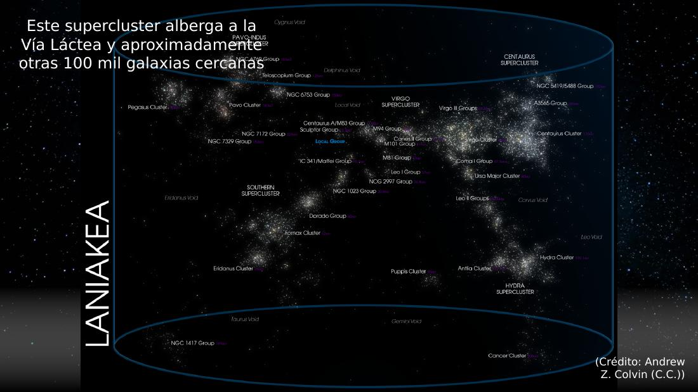
A medida que el universo se expande, los grupos ligados se fusionarán en grandes elípticas aisladas, cada vez más separadas. Para seres que vivan en ese futuro lejano, su galaxia será todo el universo visible: ya no verían el resto. Es la consecuencia última de que solo lo gravitacionalmente ligado resiste la expansión.
Ram pressure: las galaxias medusa
No hace falta chocar: basta viajar por el gas caliente del cúmulo.
Dentro de un cúmulo hay mucho gas caliente entre las galaxias (el medio intracúmulo). Cuando una galaxia rica en gas lo atraviesa, siente un "viento" en contra que le arranca su propio gas: es la presión de arrastre (ram pressure stripping). El gas queda atrás formando largos "tentáculos": son las galaxias medusa (jellyfish).
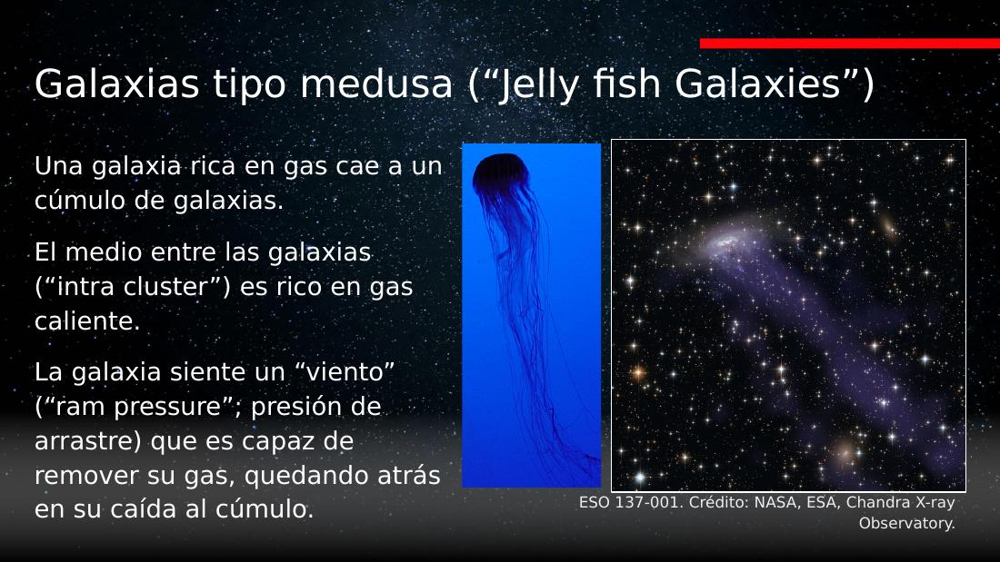
La docente advierte que probablemente se pregunte esto en la prueba. En el Renacuajo, la cola es una galaxia destrozada (gas + polvo + estrellas) por una interacción gravitacional. En la medusa, la cola es solo el gas arrancado (sin estrellas) por la presión del medio; la galaxia sigue entera. Mecanismos distintos, resultados parecidos a primera vista.
La ram pressure acelera la muerte de la galaxia: al quitarle gas, le quita combustible. ¿Por qué no lo absorbe en vez de perderlo? Porque el gas del cúmulo está caliente (mucha energía); si estuviera frío, podría caer y alimentar formación estelar. De hecho, en el universo temprano, el gas frío de la cosmic web (telaraña cósmica de filamentos de materia oscura) sí fluía hacia las galaxias y las alimentaba: ese es el otro gran mecanismo de crecimiento, junto con los mergers.
El medio intracúmulo es como un fluido viscoso: la galaxia que lo atraviesa sufre un arrastre proporcional a la densidad del medio y al cuadrado de la velocidad (). Es la misma física que el rozamiento aerodinámico de un objeto moviéndose en el aire — solo que aquí "erosiona" el gas de una galaxia entera.
La relación morfología–densidad
A más densidad de galaxias, menos espirales y más elípticas.
Todo lo anterior se resume en un resultado observacional clásico: dentro de un cúmulo, la fracción de galaxias espirales vs. elípticas depende de la densidad del entorno.
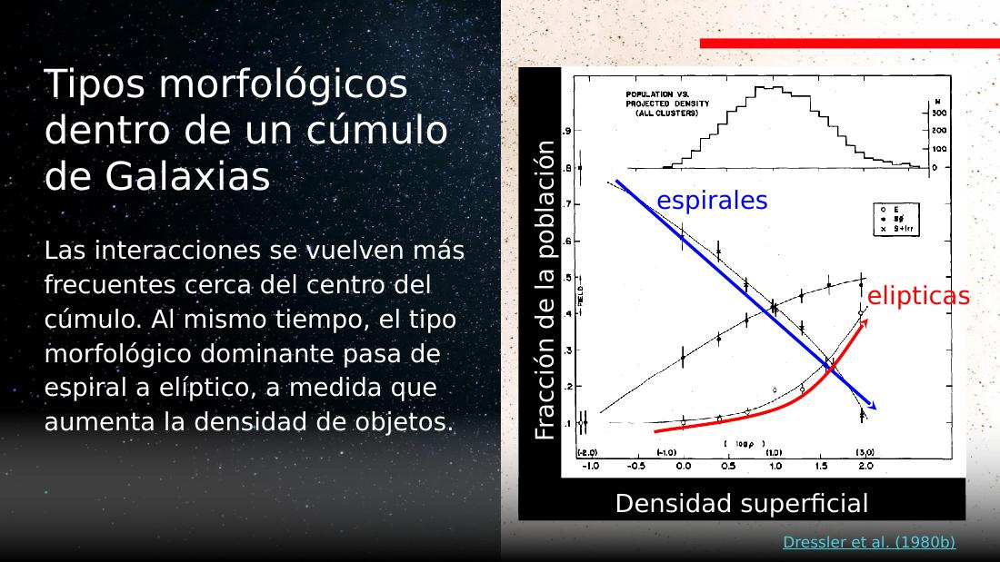
- Baja densidad (galaxias aisladas): dominan las espirales. Una galaxia que evoluciona tranquila forma un disco por conservación del momento angular del gas que acreta: el resultado natural de un colapso aislado es un disco.
- Alta densidad (centro del cúmulo): dominan las elípticas. Muchas interacciones y mergers disrumpen los discos y producen sistemas elípticos "muertos" (como será Milkdromeda).
El momento angular se conserva. Si una nube de gas con cierta rotación neta colapsa, no puede contraerse igual en todas direcciones: colapsa fácil a lo largo del eje de rotación pero resiste en el plano perpendicular → queda un disco girando. El mismo principio explica los discos protoplanetarios, los discos de acreción de AGN y las galaxias espirales: el mismo concepto a distintas escalas.
Gravedad: qué queda ligado y qué se aleja
La ley del inverso del cuadrado decide quién baila con quién.
Toda la coreografía la rige la gravedad. La docente recordó la ley de gravitación universal (la escribió de memoria "enseñando física clásica"):
De aquí salen dos consecuencias clave de la clase:
- No hay un límite fijo de "hasta dónde llega la gravedad": decae de forma continua. Lo ligado o no ligado depende de la competencia entre la atracción (que depende de masa y distancia) y la expansión del universo.
- A escala de planetas, estrellas, galaxias y del Grupo Local, la gravedad gana y los sistemas quedan ligados. A escala de supercúmulos, la expansión empieza a dominar. (Nuestro supercúmulo cae hacia el "Gran Atractor", una concentración de masa que no podemos ver bien porque el centro de nuestra galaxia la tapa.)
Hoy las interacciones son poco comunes: solo ≈ 5 % de las galaxias cercanas están interactuando. En el universo temprano —menor volumen, muchas galaxias chicas— eran mucho más frecuentes. Por eso los mergers (y los AGN, que ellos encienden) eran más comunes en el pasado, y por eso formaron las galaxias que vemos hoy. La Vía Láctea forma ≈ 2–3 estrellas por año.
Conceptos clave
Tabla de repaso rápido.
| Concepto | Qué es / valor | Por qué importa |
|---|---|---|
| Merger | Fusión de dos galaxias en un sistema nuevo | Motor principal de la evolución galáctica |
| Major merger | Razón de masas ≲ 3:1 o 4:1 | Transforma radicalmente ambas galaxias (p. ej. dos espirales → elíptica) |
| Minor merger | Razón de masas ≫ 4:1 | La grande casi no cambia; la chica se destruye (canibalismo) |
| Fuerzas de marea | Gradiente de la fuerza gravitacional | Estiran galaxias en colas y puentes |
| Starburst | Formación estelar muy intensa y breve | El gas comprimido por el merger dispara muchas estrellas |
| Quenching | Apagado de la formación estelar | El merger puede remover/calentar el gas y "matar" la galaxia |
| Feedback de SN | Energía que las supernovas devuelven al gas | Puede expulsar gas (outflows) y regular la formación estelar |
| AGN | Disco de acreción de un agujero negro activo | Un merger puede "encenderlo" llevándole gas al centro |
| Línea de 21 cm | Transición del HI neutro (cambio de espín) | Revela en radio el gas estirado por interacciones |
| Stream estelar | Galaxia enana destrozada y estirada en el halo | Evidencia fósil de minor mergers (p. ej. Gaia-Enceladus) |
| Cúmulo globular | Enjambre viejo de estrellas, sin materia oscura | ≈150 en la VL; distinto de galaxias y de streams |
| Grupo Local | VL + Andrómeda + decenas, ligadas | Se fusionará; la expansión no lo separa |
| Laniakea | Supercúmulo, ≈100.000 galaxias | No está todo ligado: no se fusiona entero |
| Ram pressure | ; arrastre del medio | Arranca gas (galaxias medusa) y acelera la muerte |
| Cosmic web | Red de filamentos de materia oscura + gas frío | Alimenta de gas a las galaxias (otra vía de crecimiento) |
| Relación morfología–densidad | Más densidad ⇒ menos espirales, más elípticas | El ambiente esculpe la morfología (Dressler 1980) |
| Colisión VL–Andrómeda | En ≈ 4.000 millones de años | Nuestro futuro major merger → elíptica "Milkdromeda" |
| Próxima Centauri | 4,2 años luz | Las estrellas casi no chocan: hay mucho vacío |
| Fracción interactuando hoy | ≈ 5 % de galaxias cercanas | Mucho menos que en el universo temprano |
Exámenes de práctica
10 exámenes de 5 preguntas (3 de alternativas autocorregibles + 2 de respuesta escrita).
- Examen 01El baile cósmico y los mergers
- Examen 02Major vs. minor merger
- Examen 03Renacuajo, ratones y anillo
- Examen 04Mareas, starburst y feedback
- Examen 05Encender o apagar estrellas
- Examen 06AGN y agujeros negros
- Examen 07Andrómeda y la Vía Láctea
- Examen 08Canibalismo y streams
- Examen 09Vecindario y ram pressure
- Examen 10Integrador